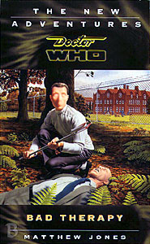

|
Bad Therapy
|
BASIC PLOT DOCTOR COMPANIONS MATERIALISATION CIRCUIT Pg 197 Near Ritzys Nightclub. Pg 288 Victoria Station, London, late twentieth century. Pg 290 London, 1958. Pg 291 Soho, 1996, at a guess. PREPARATORY READING CONTINUITY REFERENCES Pg 10 It's been several weeks since Roz's death, and nothing much has happened in the meantime. Pg 20 "We've been unable to track down any relatives for the victims, living or dead. No personal records at all." It's probably just coincidence, but this feels very like the Chameleons from The Faceless Ones. Pg 27 "One finger can be a deadly weapon!" Survival. Note that the Doctor shouts this whilst causing a rubber chicken to explode. As, indeed, one might have expected. Pg 31 "He leant over the boy and gently touched his finger to Dennis's forehead. There was a fizzing sound like a badly wired plug and Jack tasted a tang in the air, like electricity." That damned finger trick, once again from Survival. Pg 53 "He remembered the afternoon in the English village of Little Caldwell." Return of the Living Dad. Pg 58 "'Venusian hip throw,' the Doctor explained." How very Pertwee of him. Pg 85 "An image of Roz entered his thoughts suddenly. Staring at him, her face contorted into a sneer. Stay the hell out of my mind." SLEEPY. Pg 103 "She had a college kid's knowledge of archaeological theory; her only claim to practical experience were the two college digs she'd attended all those years ago." Peri (for it is she) is referencing the fact that her step-father was an archaeologist, as we saw in Planet of Fire. Pg 127 "My name? How much time do you have? A literal translation has thirty-eight syllables." Which is exactly what is stated in The Room With No Doors. Pg 128 "I put myself into a trance. Jack too." As he did with Sarah Jane in Terror of the Zygons. Pg 130 "He screamed as a hand broke the surface of the muddy trench floor, pushing its way up into the air." This is another appearance of the eighth Doctor in the final days of the NAs. Here, we get the closest reference to what the NAs would have done, as the plan was to have the Doctor die, get cremated, and then rise like the phoenix from the ashes. It's glorious, but also references a few other regenerations, particularly Logopolis, where the presence of the next Doctor is already affecting the nature of the current one. Pg 135 "I suppose the person who made this is also responsible for those chameleon mannequins?" Once again, much of the plot seems to be an alternative version of The Faceless Ones, to which this is the most direct reference. Pg 144 "The doors were marked RESEARCH WING: NO ADMITTANCE in large, unfriendly letters." A reversal of The Hitchhiker's Guide to the Galaxy, which was written by someone who had a connection to Doctor Who, many years ago. Pg 150 "It's a little trick I picked up from a Tibetan." The trance moment from Terror of the Zygons, with the implication that it may have been from someone he met in The Abominable Snowman or in the backstory to same. Pg 152 "It was only when he joined the Doctor and saw his mouth moving slightly that Jack realized that the Doctor was actually reading each page that flashed past his eyes." City of Death and, later, Rose. Pg 164 "The Doctor's given me the address of a house in Kent we can stay at." The house on Allen Road, from Cat's Cradle: Warhead and numerous others since. Pg 173 "Enough of this." Maybe a reference to The Left-Handed Hummingbird. Maybe not. "He grabbed hold of the skin under his chin and pulled his hand up across his face, tearing a huge pancake of flesh from the front of his head." How very Master-ful of him, referencing The Mind of Evil, not to mention all the other ones. Pg 180 "She knew the voice. It reminded her of her stepfather." Who we met in Planet of Fire. Pg 186 The Doctor is offered a cigarette: "I packed that in centuries ago." An Unearthly Child. Pg 192 Brief reference to Benny. Pg 198 "The cities of Chris' day were neon bright, garish and loud [on] walkways which stretched between the mile high towers." Original Sin. Pg 200 "I'm not worthy of you, he heard himself saying. To Roz." Return of the Living Dad. Pg 203 "- eighteen clumsy and shy I went to Europe and I'll show you uncle there's these two guys who are travelling and one's quite cute although I'm not going to tell you that in the water something snags my ankle and strange British youth who's got one eye on my Jesus it's bigger on the invector gauge sarcasm is not your strong point only enough for one makes me a very egotistical young lady Mondas Telos I can never remember which I think one of them is still wandering in the corridors of the well nobody likes transmutrification do they stealing brain fluid and planning to take over the Universe what again? argue mostly you left me behind you left me behind you left me behind you left me behind you" The ballad of Perpugilliam Brown. Deep breath. Planet of Fire, Planet of Fire, Planet of Fire, Planet of Fire, Planet of Fire, The Caves of Androzani, The Caves of Androzani, The Twin Dilemma, Attack of the Cybermen, Attack of the Cybermen, Attack of the Cybermen, Attack of the Cybermen, Vengeance on Varos, The Mark of the Rani, The Mark of the Rani, The Mark of the Rani, Mindwarp, Mindwarp, Mindwarp, Mindwarp, Mi Pg 213 "You may have made us with your so-called science, but we are a race of free people." Possbly a reference to Castrovalva, and a very similar sentence and sentiment. Pg 216 "To isolate ourselves is such a childish thing to do. A good and wise woman taught me that." Roz, in So Vile a Sin. "Accidents happen, Julia. People die. And sometimes children do terrible things." A presumably deliberate misquote of The Moonbase. Pg 225 "I take it that you're the latest" ... companion. Battlefield. Pg 229 Reference to Thoros-Beta, from Mindwarp. Pg 236 "I wouldn't want to condemn one of our people to someone with no imagination or to someone who was cruel or cowardly." The end of this is Terrance Dicks' definition of the Doctor. Pg 238 "Forrester, Ishtar, old girlfriends." Ishtar is from Happy Endings. Pg 245 The Doctor to Peri: "I was told you were in love." The Ultimate Foe and, actually, not strictly true. Pg 251 The Doctor can't dance. Well, that was to be expected, but see The Doctor Dances. Pg 257 "Every decision, every event created ripples in the Universe." Remembrance of the Daleks. Pg 269 An implied reference to Bessie, the third Doctor's car, and penis extensions, bizarrely. Pg 284 "His aces were all spent." Ace, and Battlefield in particular. OLD FRIENDS AND OLD ENEMIES NEW FRIENDS AND NEW ENEMIES Mikey and Dennis. Tilda Jupp. Chief Inspector Harris. Jack Bartlett. Jeffrey the Stage Manager. Gordy Scranton and Carl. Not the nicest of people. A drunken old woman called Margaret. Ala'dan. Julia Mannheim, who we don't like much. Jake Dimes, Ronnie Donaghue and Billy Spot, none of whom are pleasant. Mrs Carroway.
CONTINUITY COCK-UPS PLUGGING THE HOLES [Fan-wank theorizing of how to fix continuity cock-ups] FEATURED ALIEN RACES Gelatinous taxicabs with a green light on the top and which swallow you up. Some people from Kr'on Tep. FEATURED LOCATIONS Pg 4 Leicester Square. Pg 15 A hospital in Cleveland Street. Pg 24 A pub called The Fourth Magpie. (Note that, in a story with a massive gay subtext, in the well-known rhyme, it's 'three for a girl and four for a boy'.) Pg 46 Old Compton Street Pg 50 Ritzys Nightclub, a place that presumably does not believe in the existence of apostrophes. Pg 69 The royal barge, Jewelled Sword, above the city of Kr'on Tep. Pg 70 The palace of the first queen on Kr'on Tep. Pg 75 Charing Cross Police Station Pg 85 Liverpool Street Station Pg 91 Healey, near the Thames Estuary Pg 94... specifically, the Petrushka Psychiatric Research Institute. Pg 164 Notting Hill. Pg 167 Silchester Road. Pg 198 Hammersmith. Pg 244 Ronnie Scott's Pg 288 Victoria Station, London, in the late twentieth century. IN SUMMARY - Anthony Wilson |
|
 |